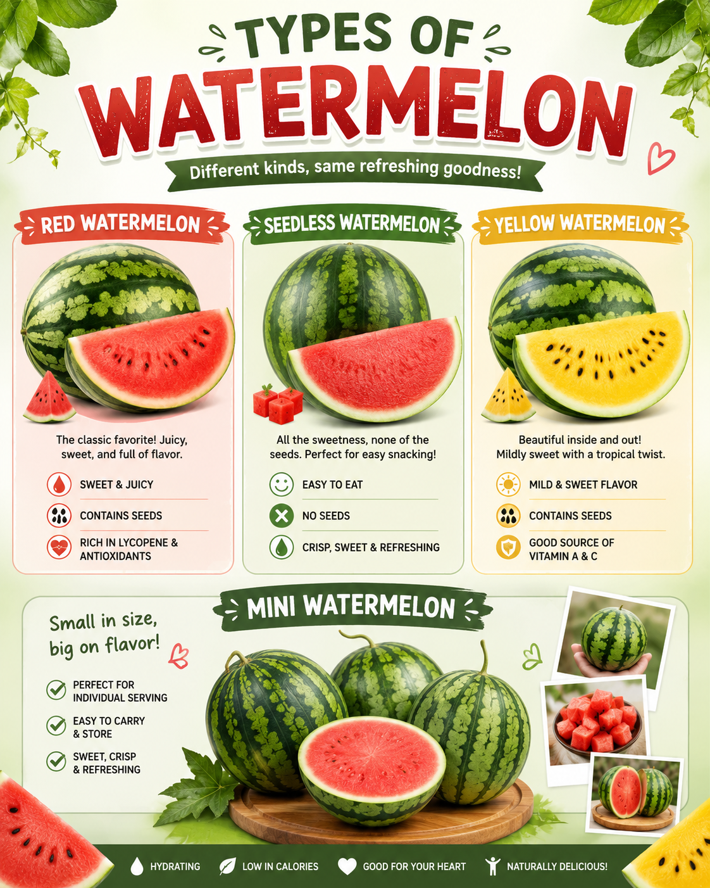
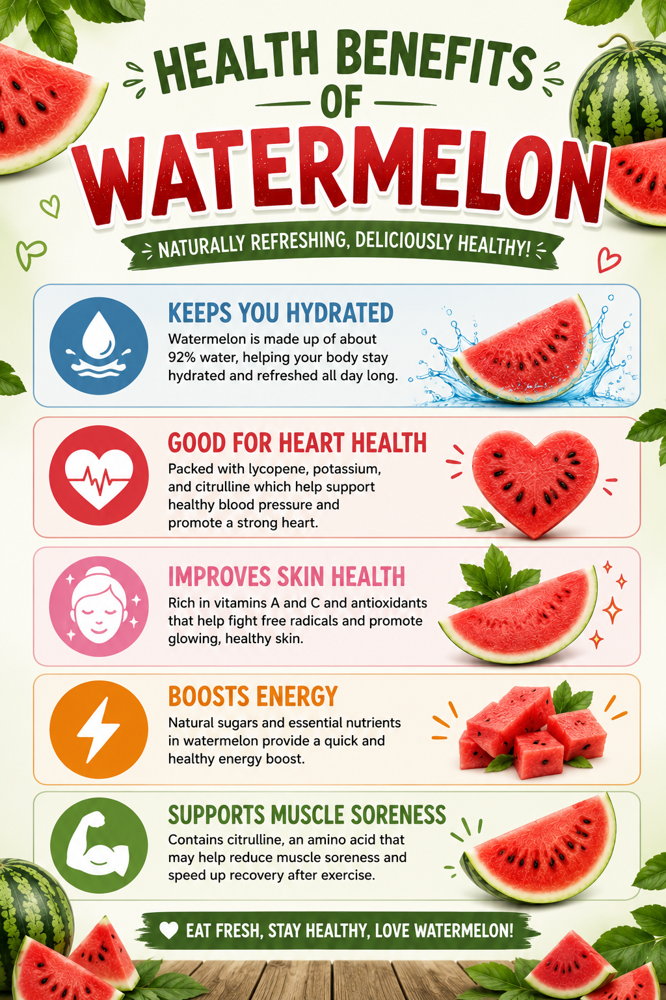

HISTORY
Watermelon originated in Africa, particularly in the Kalahari Desert region, and has been cultivated for around 4,000 to 5,000 years. The earliest evidence of its use was found in Ancient Egypt, where watermelon seeds were discovered in Pharaoh tombs, showing that it was an important food source in early civilization. At that time, watermelons were not as sweet as the ones we eat today, but they were valued mainly for their high water content. Over time, the fruit spread from Africa to other parts of the world through trade routes, reaching the Middle East, Asia, Europe, and later the Americas. As it was cultivated in different regions, farmers selectively bred watermelons to become larger, sweeter, and juicier, resulting in the modern watermelon we enjoy today.

TYPES OF WATERMELON
- Red Watermelon
- Seedless Watermelon
- Yellow Watermelon
- Mini Watermelon
HEALTH BENEFITS
- Good for heart health – Helps support blood pressure and heart function.
- Improves skin health – Helps keep skin healthy and glowing.
- Boosts energy – Contains natural sugars for quick energy.
- Supports muscles and brain – Antioxidants help reduce inflammation and muscle soreness.

HOW TO GROW WATERMELON
Choose Good Seeds
Plant seeds 1 inch deep in clusters of 3-4 seeds, spacing clusters 18-24 inches apart in rows 6 feet apart; thin to 2-3 strong seedlings per cluster after germination.
Prepare the Soil
Keep the soil consistently moist (=1 inch of water per week) and mulch to retain moisture and suppress weeds.
Plant the Seedling
When the plant has 7 leaves, pinch off the main vine tip and retain 2-3 side vines to direct energy to fruit development.
Care for the Plant
Apply a low-nitrogen, high-potassium fertilizer (e.g.,4-8-5) at planting and again when fruit set begins.
Harvest the Watermelon
Harvest the melons when the rind loses its shine and the undersine turns creamy yellow, typically 65-80 days after planting.
FUN FACTS
- Watermelon is a refreshing tropical fruit that is popular in Malaysia, especially in hot weather.
- Watermelon is usually available all year round and is often eaten chilled for a cooling effect.
- It is commonly sold in supermarkets, markets, and roadside stalls as a popular thirst-quenching fruit.